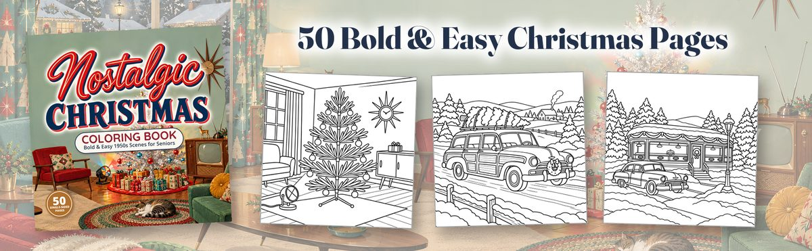
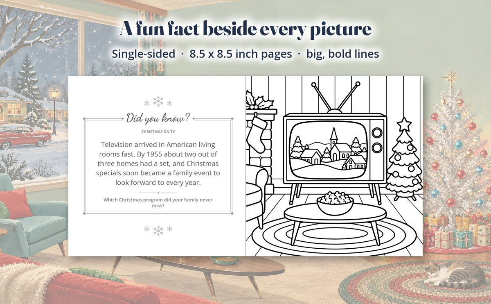
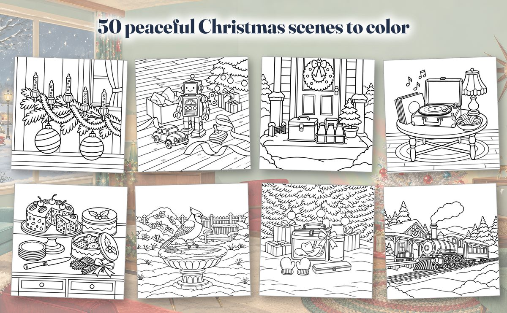
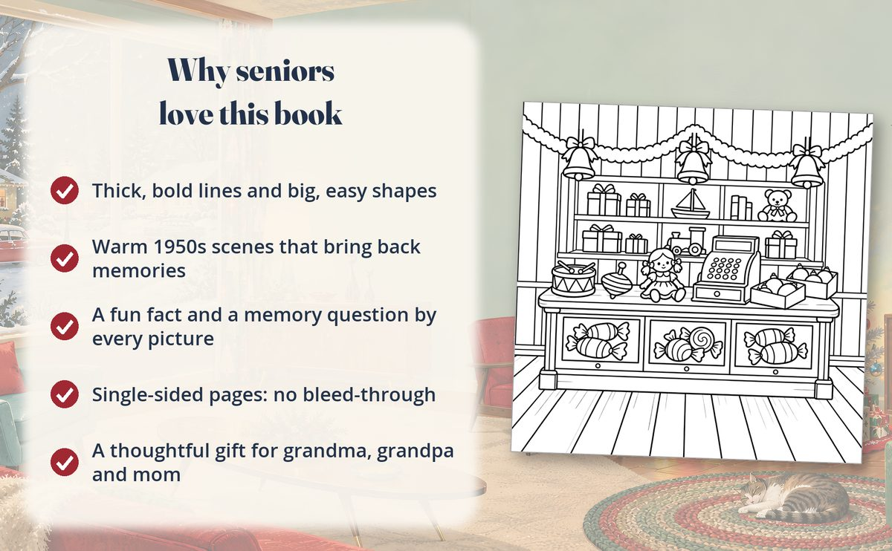

Cozy Christmas Coloring Book for Adults and Seniors
50 peaceful holiday scenes in bold and easy large print designs, with a fun fact beside every page
View on Amazon
50 bold and easy 1950s holiday scenes, with a fun fact and a memory question beside every page
View on Amazon ⬇ Print a free page
There are 49 more old-fashioned Christmas scenes to color, each with a fun fact and a memory question, in Nostalgic Christmas Coloring Book for Seniors.
Color your way back to a 1950s Christmas.
This nostalgic Christmas coloring book for seniors is filled with the Christmases many of us remember: bubble lights and tinsel, a station wagon bringing home the tree, milk bottles on a snowy step, the family television and a toy train circling the tree. Fifty scenes are drawn in a bold and easy style, with thick lines, big simple shapes and nothing fiddly, so every page is relaxing to color, even with tired eyes or unsteady hands.
What's insideAn aluminum tree glowing under its color wheel, bubble lights, a toy store window, tin wind-up toys, a rotary telephone, a record player, a roadside diner in the snow, milk bottles on the porch, roller skates with their key, laundry stiff with ice on the line, a five-and-dime counter, a transistor radio, a jigsaw puzzle on the card table, a cuckoo clock, a horse and sleigh, and a steam train pulling into a snowy station.
Remember when?When did families start buying aluminum trees? Why did milk bottles pop their caps on cold mornings? Who answered children's letters to Santa? Every page faces a short, true fact and a question such as "What was the favorite toy you found under the tree?" Wonderful for reminiscing, and for starting conversations across the generations.
Perfect forA lovely stocking stuffer for grandma, grandpa, mom or dad, or a gift to share during a visit. Pair it with a set of markers or colored pencils for a ready-made present.
Put on a Christmas record, find a comfy chair and start coloring.




50 peaceful holiday scenes in bold and easy large print designs, with a fun fact beside every page
View on Amazon
Join the Pixel Punk Studio newsletter and get 5 large print word searches you won't find on this site or in our books, with solutions. Then one email a month at most: new books, free puzzles and gift ideas.
Unsubscribe in one click. See our privacy policy.